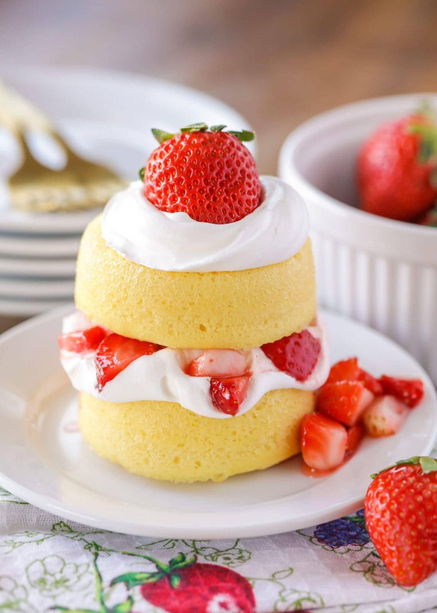

Strawberry Shortcake

Ingredients
- 1 quart fresh strawberries
- 1/4 cup white sugar
- 1 package prepared sponge cake
- 1 can whipped cream
Directions
- Place strawberries in a container with a lid; add sugar and stir to coat. Place lid on the container and refrigerate until sugar has dissolved, at least 15 minutes.
- Place a 1 dessert cup in each serving bowl and smother with strawberries. Top each with whipped cream.
- To have warm place in oven for 5 minutes at 375oF.